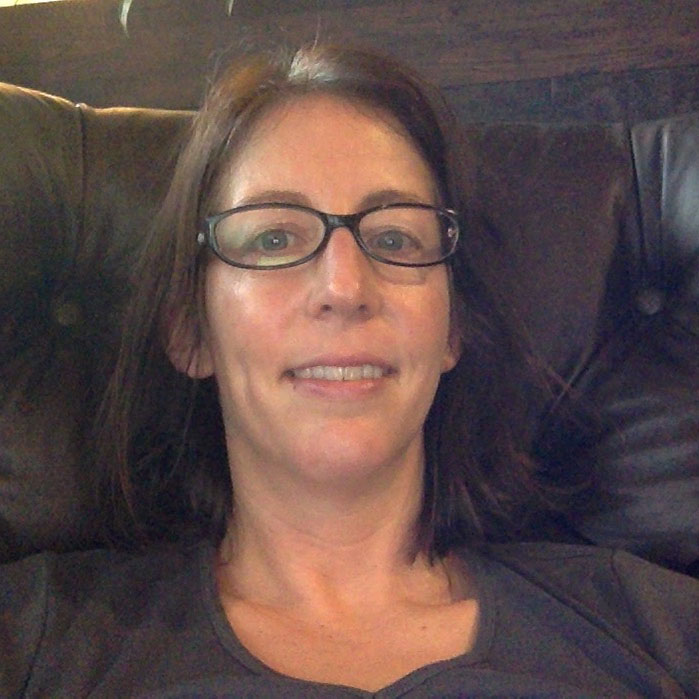
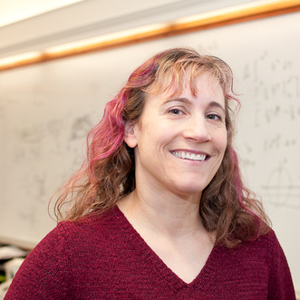
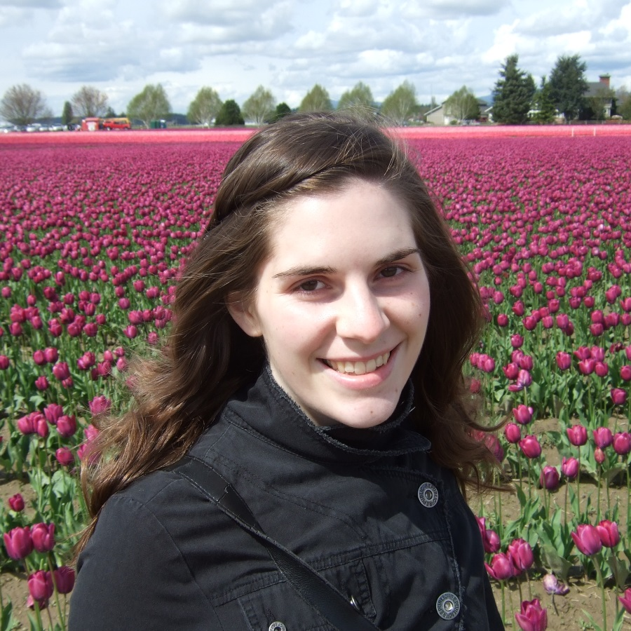

Mission Statement
The PSCSTA is a local chapter of the national organization, CSTA. CSTA is a membership organization that supports and promotes the teaching of Computer Science and other computing disciplines. They provide opportunities for K-12 teachers and students to better understand the computing disciplines and to more successfully prepare themselves to teach and learn.
The mission of this Chapter(PSCSTA) is to further the mission of the CSTA and to promote and support teacher workshops and student contests in Computer Science in Western WA. The policies of the Chapter shall not reflect any political partisanship, nor any preference, discrimination, or limitation based upon sex, race, or religious affiliation.
Current Officers
The officers represent the leadership of the PSCSTA. They all help organize, and plan the various activities of the organization.

Andrea Foegler, Co-President
Andrea has taught AP Computer Science at Newport High School since 2011 and has served on the Computer Science Advisory board for the Bellevue School District since 2012. She attended Ohio State studying CS, Philosophy and Molecular Genetics. She received her Masters in CS from USC. After several years of working in software doing IC chip simulation, recommendation features at Amazon and the mortgage product on Zillow, Andrea left industry and worked on her teaching certificate in Math and Special Ed. After teaching for a year, she returned to software. While working at Microsoft, she decided to try and balance both a teaching and a software career. She’s continued this balance while working for a small educational startup and since moving on to Google, where she is now.
Ken Hang, Co-President
Kendrick Hang is an Instructor in Information Technology and Computer Science and the Program Director for the Bachelor of Applied Science in Software Development at Green River College. Kendrick teaches introductory programming, database fundamentals, and mobile application development courses. Currently working on connecting an ecosystem of high schools, colleges, and tech industry partners together in South King County and Pierce County, Kendrick is dedicated to creating a seamless pathway for women, underrepresented minorities, and students from low income backgrounds to access high demand, high paying careers in technology. Prior to teaching, Kendrick was a software engineer developing aircrew and tactical training systems for the United States Navy.

Lauren Bricker, Treasurer
Lauren has been a member of PSCSTA since she started teaching Computer Science at Lakeside High School in Seattle in 2007. Previously, she was a software engineer and has worked at many companies, including Performant, MathSoft, Ark Interface, ConnectSoft/Adonis, Caddex and Boeing, as well as being a software consultant. Lauren graduated from the University of Michigan in 1985 with a degree in Honors Theoretical Mathematics and received her PhD from the University of Washington in Computer Science and Engineering in 1998. Her interests include Human Computer Interaction (HCI), Computer Supported Collaboration (CSC), and Single Display Groupware (SDG), and she is a self-proclaimed graphics groupie. Currently Lauren is teaching Intro CS in Java, an advanced CS course entitled “Programming Beyond the Desktop” and a 3D modeling and printing class. She is also actively involved in designing a Makerspace for her school. When not in the zone with kids and code, she is often found creating art with wire, yarn or fire, or outside running or biking.
Position Available, Scribe
If you are interested in volunteering your time to help with documenting our meetings please reach out to us.
Stuart Reges, University Liaison
Stuart Reges is a Principal Lecturer in the Department of Computer Science and Engineering at the University of Washington where he manages the introductory programming classes. He has previously taught at Stanford University and the University of Arizona. In 2012 he won the Distinguished Teaching Award which is the highest award given by UW for teaching. He has been involved in K-12 outreach for over 30 years, serving as the second chief reader for AP/CS in the 1980’s.
Past Officers

Allison Obourn, Scribe 2014 – 2016
Allison Obourn helds a position as Lecturer in the Computer Science & Engineering Department (CSE) at the University of Washington while volunteering her time with the PSCSTA. Her duties have included teaching introductory programming classes, teaching web programming, and coordinating outreach to local schools through the UW CSE’s DawgBytes program. She has organized CS summer camps for middle and high school students, directed high school visits to UW CSE, and coordinated visits to the schools by UW CSE students. She is the faculty coordinator for the UW in the High School CSE 142 class. Allison holds two degrees from the University of Washington: B.S. in Computer Science (2011) and M.S. in Computer Science and Engineering (2013). She spent 2008-2009 studying at the University of Edinburgh.
Alex Kharbush, Vice President 2015 – 2016
Alex is an Iowan native who has made his way to the west coast with the help of his Software Engineering degree from Iowa State University. Alex initially became involved with the PSCSTA in the spring of 2015 during the spring programing contest. During the school year Alex volunteers with the Seattle Public Library as homework helper. Alex currently works at Amazon in south lake union.
Earl Bergquist, Vice President 2013 – 2015
Earl Bergquist organized and ran our Spring contest for 2 consecutive years, and was largely involved in our fundraising efforts with the Living Computer Museum. Earl remains an active member and currently teaches Computer Science classes at Garfield High School including Advanced Placement CS & Introduction to CS and coaches their First Robotics team.
Andrew Davidson, Vice President 2011 – 2013
Andy Davidson led as our Vice President while starting up the computer science program at Roosevelt High School. He has since transitioned to teaching in the Human Centered Design and Engineering department at UW. He remains an active member committed to the success of the Paul Allen Computing Challenge.
Greg Kilpatrick, President 2009 – 2015
Greg Kilpatrick was our founding president and successfully led our organization for 6 consecutive years. He remains an active member and currently works as the Assistant Director of Career and Technical Education at South Kitsap School District. Greg previously taught at Vashon and Bellevue High Schools.
Hélène Martin, Scribe 2008 – 2014
Hélène Martin has participated in PSCSTA since 2008, and served as our scribe. She started the computer science program at Garfield High School and later taught at UW CSE where she created the DawgBytes outreach program. Hélène is currently out of the classroom as she writes software for startups while traveling the world.